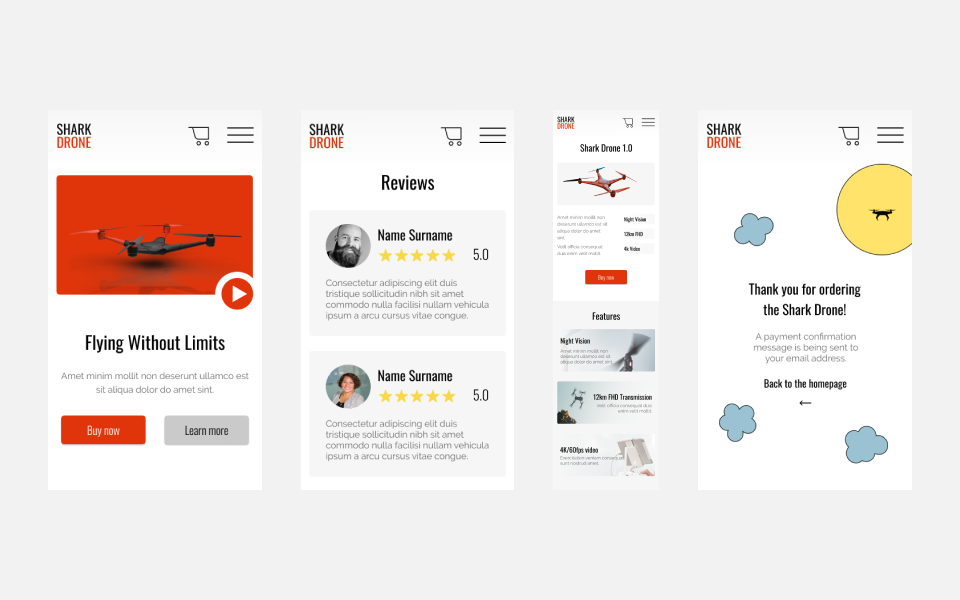
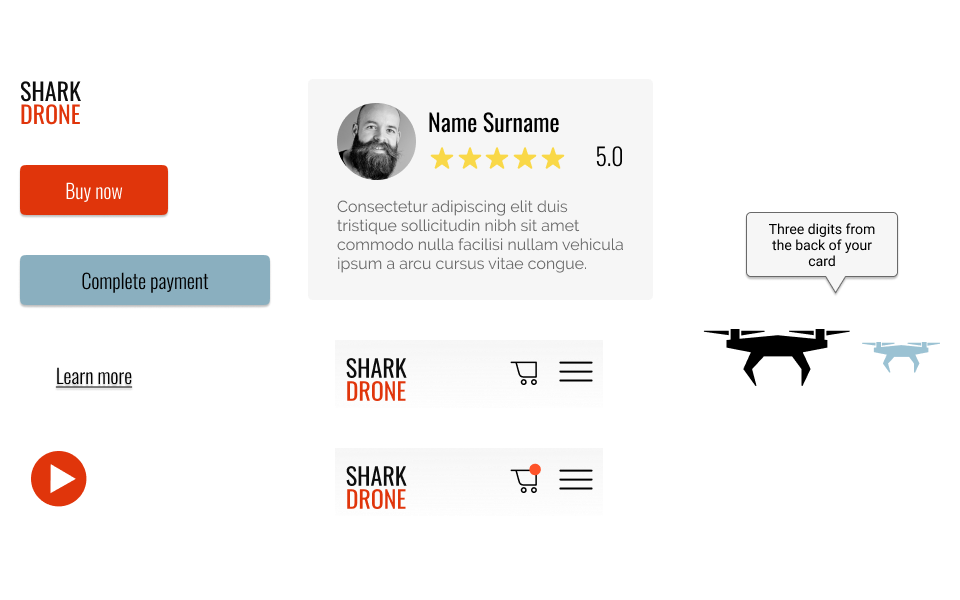
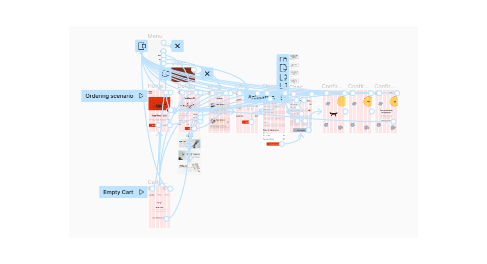

Shark Drone. Product website
This project was created for the Figma UI/UX Design Course. The goal was to create an e-commerce purchase flow for a randomly selected product. The flow should include: homepage, product features page, checkout page, and a confirmation page. The confirmation flow should include a simple animation.
Tools: I used Figma and Adobe Illustrator.
I was working on: wireframing, prototyping, mock up creation, high fidelity prototype creation, and illustrations.
Low-fidelity prototype
I started with creating a list of pages I need to design:
- Homepage
- Product detail
- Reviews
- Cart with the order details
- Shipping details
- Checkout page for online payment
- Confirmation
- 404
I prepared wireframes of those screens and connected them into a low-fidelity prototype.

I started with wireframing mobile versions of the website. The desktop version will follow.
Colors
Here you will find all the colors that I have used to design this website.
- Red color was inspired by the product. The promoted drone use red and black colors.
- Blue color brings a feel of trust and reliability. It is a calming color which can be in a contradiction to the red color.
- Black color for copy and text content.
- Yellow color for other small elements, e.g. stars used in reviews.
I played with the shades and defined the final colors.
Font
I prepared a few font pairings and chose the one which I like the most: the combination of fonts Oswald and Raleway.
- Oswald for headlines and buttons
- Raleway for the rest of the copy, paragraphs, etc.

Components
For the first component, I decided to create a navigation. I started with two versions - with an empty basket and a full basket. I also created buttons - CTA button, underlined link, payment button, play button for the video which will be displayed on the homepage.
Here you will find some components that I have used to design this website.
High-fidelity prototype
I used selected colors, fonts and components to follow wireframes and create a high-fidelity prototype in Figma.
See the high-fidelity prototype of the mobile version
Desktop mock up
I adjusted the components a bit and created a desktop version of the homepage.
The project is still in progress. I will continue with preparing the remaining pages for the desktop version and will work on user research.